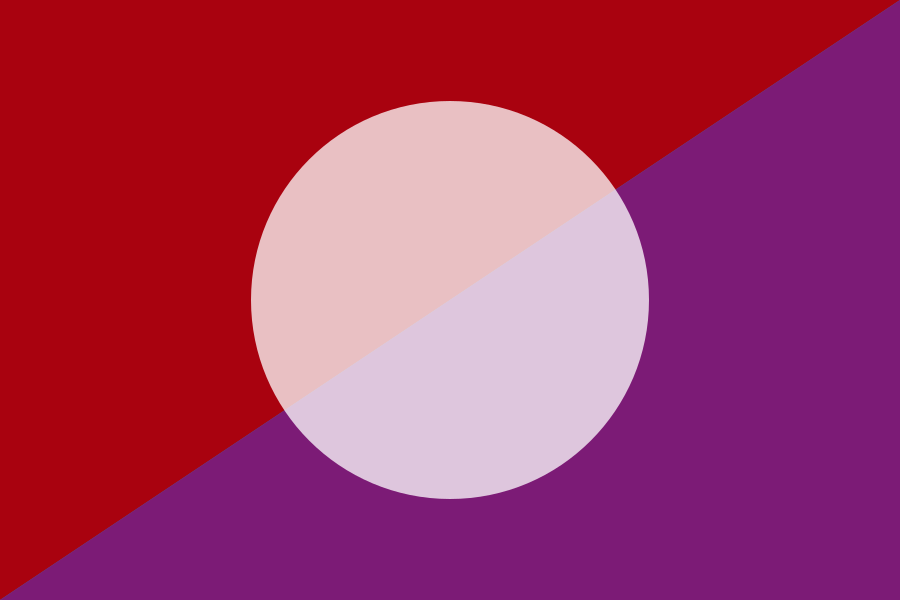
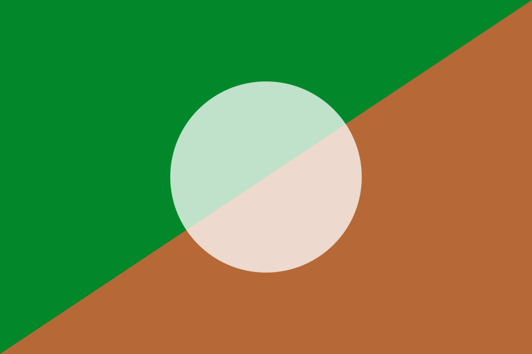
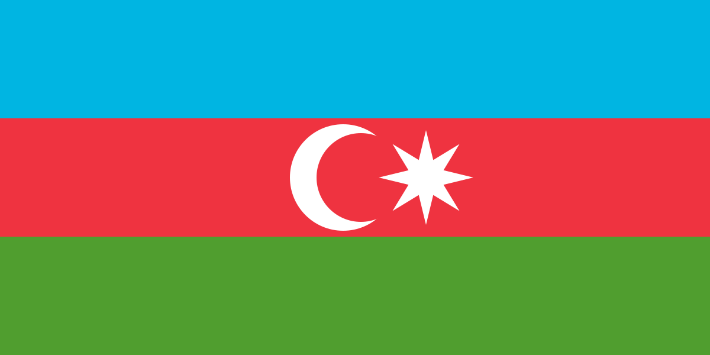
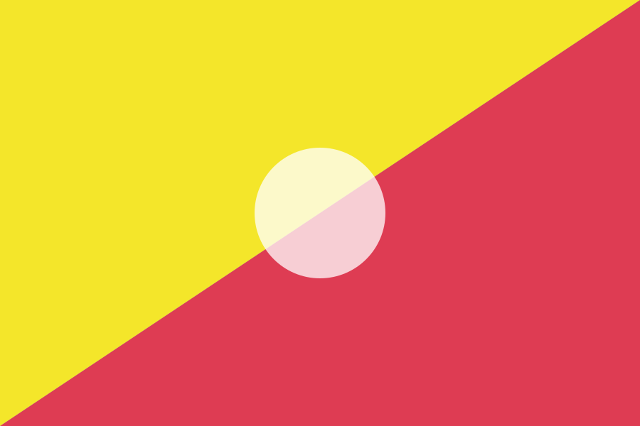

国旗プレビュー
196か国の国旗・国名・国コードを一覧確認するためのページです。
日本
jp
中国
cn
韓国
kr
モンゴル
mn
ブルネイ
bn
カンボジア
kh
インドネシア
id
ラオス
la
マレーシア
my
ミャンマー
mm
フィリピン
ph
シンガポール
sg
タイ
th
東ティモール
tl
ベトナム
vn
インド
in
パキスタン
pk
バングラデシュ
bd
スリランカ
lk
ネパール
np
ブータン
bt
モルディブ
mv
カザフスタン
kz
キルギス
kg
タジキスタン
tj
トルクメニスタン
tm
ウズベキスタン
uz
オーストラリア
au
ニュージーランド
nz
フィジー
fj

キリバス
ki
マーシャル諸島
mh
ミクロネシア
fm
ナウル
nr
パラオ
pw
パプアニューギニア
pg
サモア
ws
ソロモン諸島
sb
トンガ
to
ツバル
tv
バヌアツ
vu
クック諸島
ck
ニウエ
nu
アメリカ
us
カナダ
ca
メキシコ
mx
アンティグア・バーブーダ
ag
バハマ
bs
バルバドス
bb
ベリーズ
bz
コスタリカ
cr
キューバ
cu
ドミニカ国
dm
ドミニカ共和国
do
エルサルバドル
sv
グレナダ
gd
グアテマラ
gt
ハイチ
ht
ホンジュラス
hn
ジャマイカ
jm
ニカラグア
ni
パナマ
pa
セントクリストファー・ネービス
kn
セントルシア
lc
セントビンセント
vc
トリニダード・トバゴ
tt
アルゼンチン
ar
ボリビア
bo
ブラジル
br
チリ
cl
コロンビア
co
エクアドル
ec
ガイアナ
gy

パラグアイ
py
ペルー
pe
スリナム
sr
ウルグアイ
uy
ベネズエラ
ve
イギリス
gb
アイルランド
ie
フランス
fr
ドイツ
de
イタリア
it
スペイン
es
ポルトガル
pt
オランダ
nl
ベルギー
be
ルクセンブルク
lu
スイス
ch
オーストリア
at
スウェーデン
se
ノルウェー
no
デンマーク
dk
フィンランド
fi
アイスランド
is
エストニア
ee
ラトビア
lv
リトアニア
lt
ポーランド
pl
チェコ
cz
スロバキア
sk
ハンガリー
hu
ルーマニア
ro
ブルガリア
bg
スロベニア
si
クロアチア
hr
ボスニア・ヘルツェゴビナ
ba
セルビア
rs
モンテネグロ
me
コソボ
xk
アルバニア
al
北マケドニア
mk
ギリシャ
gr
マルタ
mt
キプロス
cy
モルドバ
md
ウクライナ
ua
ベラルーシ
by
ロシア
ru
アンドラ
ad
モナコ
mc
サンマリノ
sm
バチカン
va
リヒテンシュタイン
li
アルメニア
am

アゼルバイジャン
az
ジョージア
ge
アラブ首長国連邦
ae
バーレーン
bh
イラン
ir
イラク
iq
イスラエル
il
ヨルダン
jo
クウェート
kw
レバノン
lb
オマーン
om
カタール
qa
サウジアラビア
sa

シリア
sy
トルコ
tr
イエメン
ye
アフガニスタン
af
アルジェリア
dz
アンゴラ
ao
ベナン
bj
ボツワナ
bw
ブルキナファソ
bf
ブルンジ
bi
カーボベルデ
cv
カメルーン
cm
中央アフリカ
cf
チャド
td
コモロ
km
コンゴ共和国
cg
コンゴ民主共和国
cd
コートジボワール
ci
ジブチ
dj
エジプト
eg
赤道ギニア
gq
エリトリア
er
エスワティニ
sz
エチオピア
et
ガボン
ga
ガンビア
gm
ガーナ
gh
ギニア
gn
ギニアビサウ
gw
ケニア
ke
レソト
ls
リベリア
lr
リビア
ly
マダガスカル
mg
マラウイ
mw
マリ
ml
モーリタニア
mr
モーリシャス
mu
モロッコ
ma
モザンビーク
mz
ナミビア
na
ニジェール
ne
ナイジェリア
ng
ルワンダ
rw
サントメ・プリンシペ
st
セネガル
sn
セーシェル
sc
シエラレオネ
sl
ソマリア
so
南アフリカ
za
南スーダン
ss
スーダン
sd
タンザニア
tz
トーゴ
tg
チュニジア
tn
ウガンダ
ug
ザンビア
zm
ジンバブエ
zw